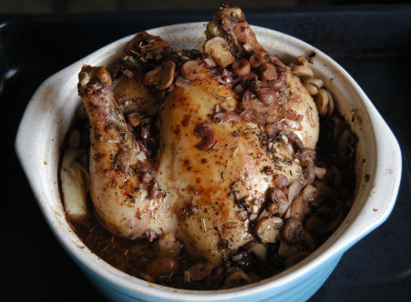

| Für 4 Personen: | |
| 1 | Poulet |
| 1 TL | Salz |
| 4 Msp | Pfeffer |
| 1 Msp | Paprika |
| 1 EL | Olivenöl |
| 2 EL | Öl |
| 1 | Zwiebel |
| 2 | Knoblauchzehen |
| 1 TL | Herbes de Provence |
| 1 | Aubergine |
| 2 dl | Rotwein |
| 1 kl | Dose Champignons |
| 10 | Oliven schwarz |
Poulet aussen und innen mit Salz, Pfeffer, Paprika und Olivenöl einreiben. In einem ofenfesten Geschirr das Öl erhitzen, Poulet hineingeben und im Ofen bei 200°C 20 Minuten braten, zwischendurch mit Bratensatz übergiessen.
Dann die gehackte Zwiebel, Knoblauch, Herbes de Provence und die in kleine Stücke geschnittene Aubergine dem Poulet zufügen, 10 Minuten mitdämpfen
Dann mit Rotwein ablöschen und bei 180°C weitere 15 Minuten fertig garen lassen.
Das Poulet herausnehmen und warm stellen, Champignons und die entsteinten Oliven der Aubergine beifügen, kurz aufkochen und abschmecken. Das Poulet auf der Platte anrichten und mit der Gemüse/Pilzmischung ringsum belegen.
Herbert Eigenmann, Code: PLN
Am 7.1.2004 zubereitet. Ich hatte ein zu hohes Geschirr für das Gericht. Dadurch wurde das Poulet mehr gekocht denn gebraten. Dann war ich etwas zu grosszügig mit dem Wein der dann im Geschmack dominierte. Da ich keine Auberginen hatte fügte ich Kartoffelscheiben bei. Die hätte ich aber vorgaren sollen denn 1 Stunde Backzeit war zu wenig. Am nächsten Tag schmeckten die Pouletresten in der Bratpfanne gebraten ganz hervorragend.
@LINKBACK_TAG@ @WAKELOCK@